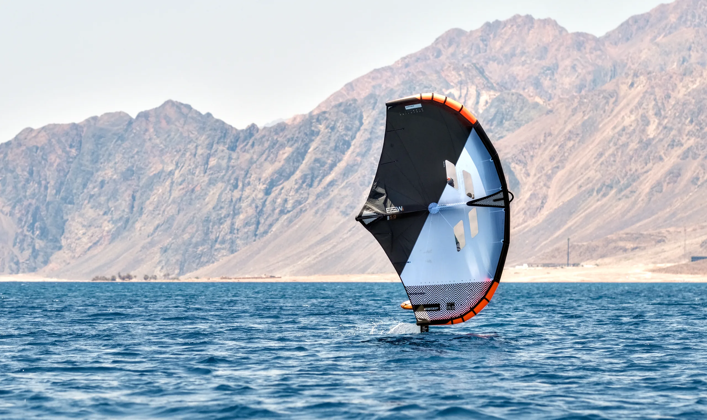
Обучение вингфойлу
в Дахабе с нуля
Этапы, реальные сроки и первые полёты: понятный маршрут от устойчивой SUP-доски до самостоятельного катания.
Путь к самостоятельному полёту
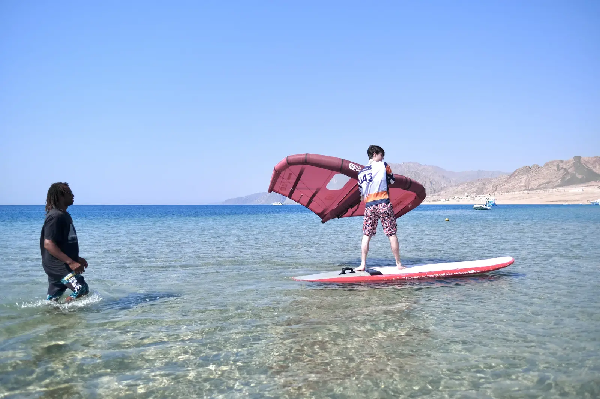
Этап 1. SUP + швертовая доска
Занятие с инструктором, навык можно закрепить самостоятельно.
Освоить управление вингом, научиться удерживать курс и уверенно возвращаться на станцию.
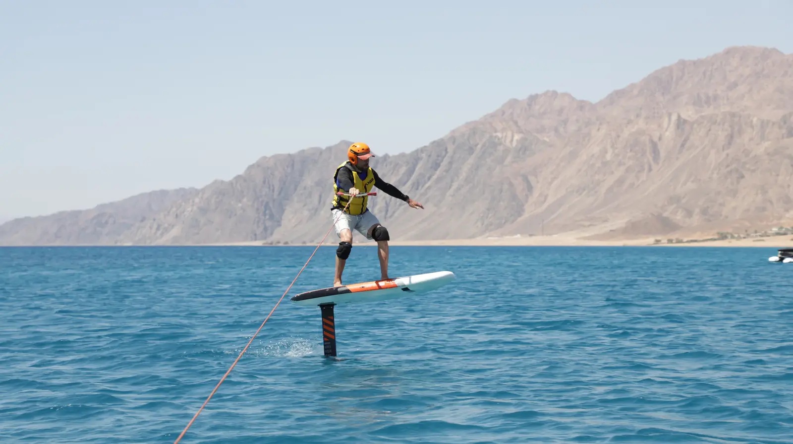
Этап 2. Доска с фойлом + лодка
Занятие с инструктором.
Почувствовать баланс и работу фойла. Этап пройден, когда ученик уверенно держит небольшую дистанцию на фойле.
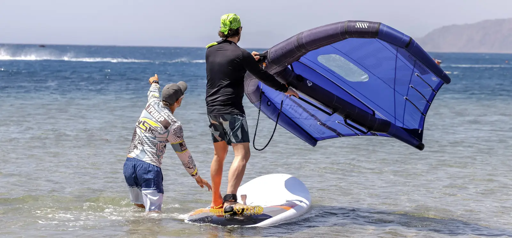
Этап 3. Соединить винг + фойл
Занятие с инструктором, навык можно закрепить самостоятельно.
Соединить управление вингом и контроль фойла: одновременно держать баланс и управлять тягой.
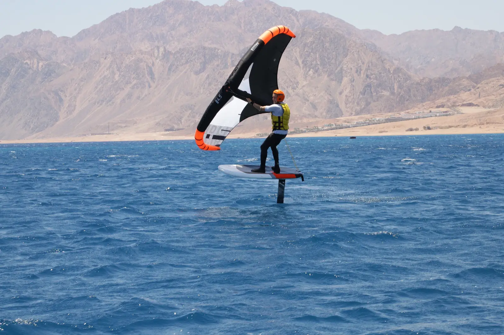
Накат. Первые самостоятельные полёты
Инструктор — по мере необходимости.
Стабилизировать полёт, постепенно уменьшать объём доски и начинать зарезаться на ветер.
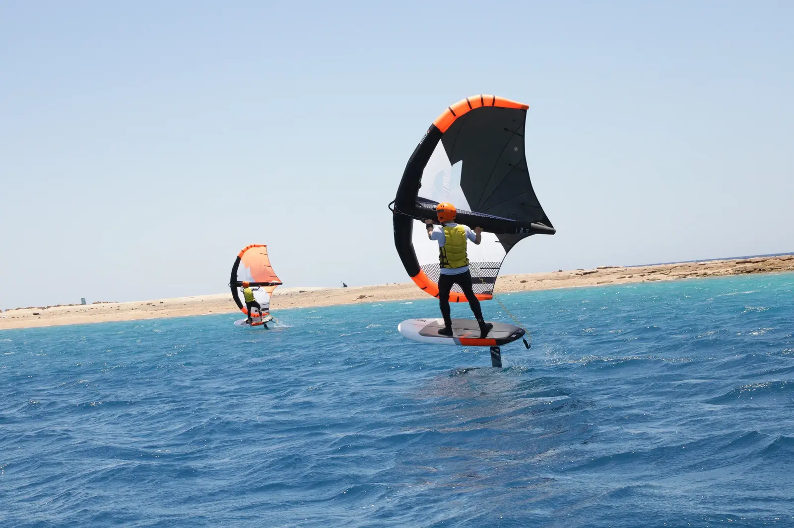
Стабильный полёт. Свободное катание
Самостоятельное катание или занятия с инструктором — в зависимости от целей.
Удерживать курс и возвращаться на берег. Переходить к меньшей доске, первым петлям и более продвинутому оборудованию.
У каждого свой темп. Все ученики приходят с разным опытом — или совсем без него. Временная шкала показывает последовательность обучения, а не строгие сроки.
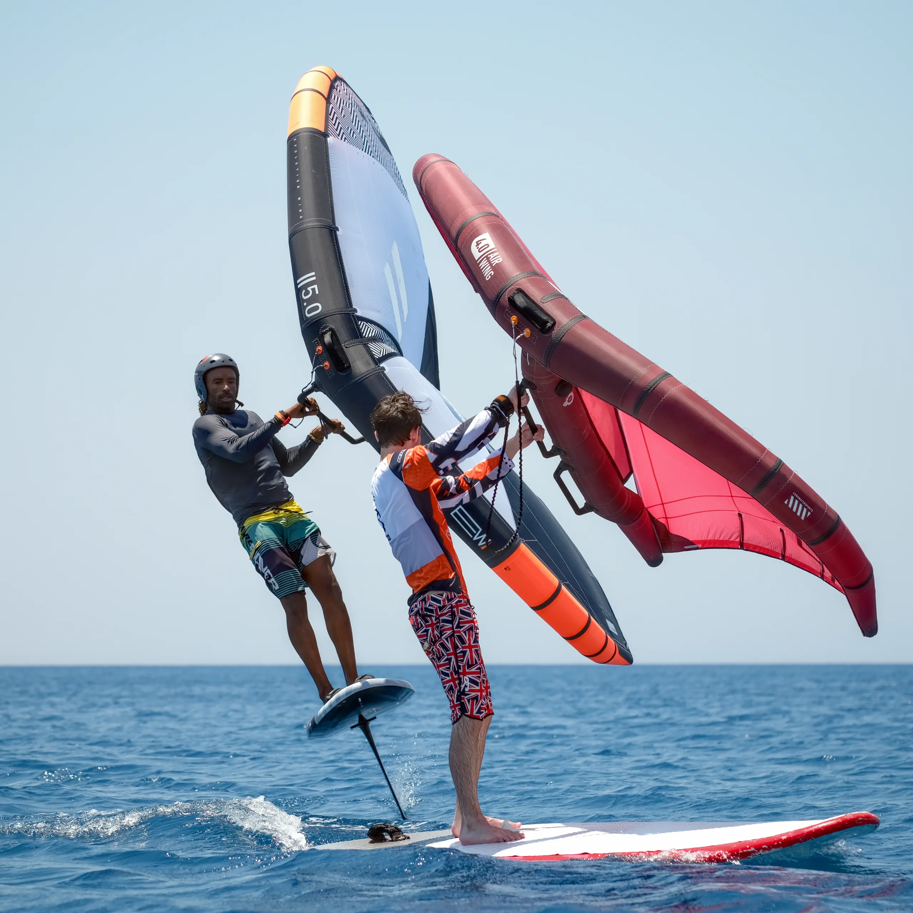
Формула понятного обучения
Быстрый старт в мир вингфойлинга
Вингфойл выглядит сложным только со стороны. На самом деле всё гораздо проще. Главное — не пытаться освоить всё одновременно. Именно поэтому наша методика построена поэтапно.
Вингфойл объединяет два навыка, которые в итоге работают вместе. На первый взгляд кажется, что нужно контролировать слишком много. Но каждая часть тела отвечает только за свою задачу.
— Руки, плечи и корпус управляют вингом. Они отвечают за тягу, скорость и направление движения, то есть помогают держать курс.
— Ноги управляют фойлом. Они отвечают за баланс и высоту полёта.
Сначала — руки и управление вингом. Затем — ноги и контроль фойла. После этого навыки соединяются.
Оба навыка быстро становятся естественными для тела. И уже с этого момента начинается настоящее катание: практика, полёты — всё больше уверенности.
Этап 1
Винг + швертовая доска (SUP)
Для этого используют широкую устойчивую швертовую доску. По ощущениям она похожа на SUP, но благодаря шверту отлично идёт против ветра. Это позволяет полностью сосредоточиться на управлении вингом, не отвлекаясь на баланс фойла.
На этом этапе активно работают руки, плечи и корпус. Ноги остаются на устойчивой платформе и практически не требуют внимания.
Задачи первого занятия:
— научиться уверенно держать винг;
— понимать, под каким углом он должен находиться к ветру;
— удерживать выбранный курс;
— не соскальзывать вниз по ветру.
Главная цель — зайти в лагуну и уверенно вернуться обратно на станцию.
Стабильный винг — основа всего обучения. Не бороться с ветром, а удерживать правильный угол винга.
Чем меньше лишних усилий, тем стабильнее управление.
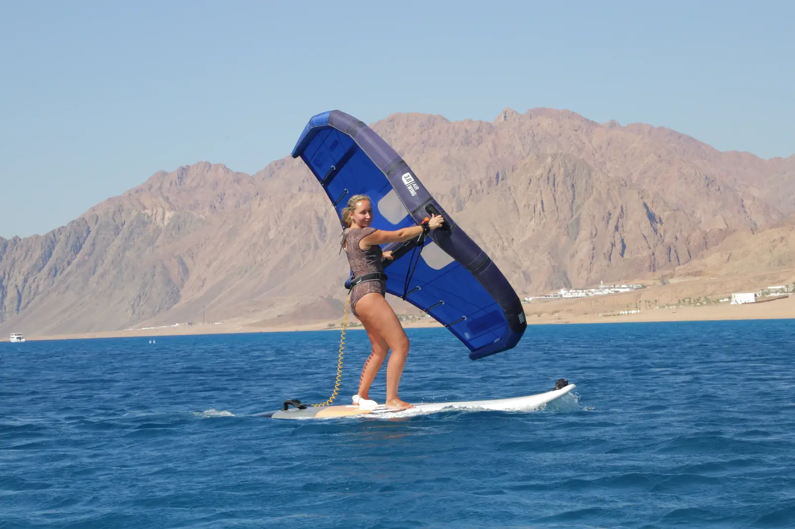
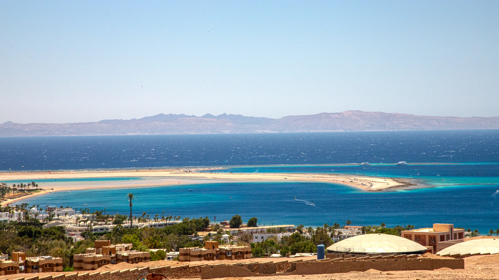
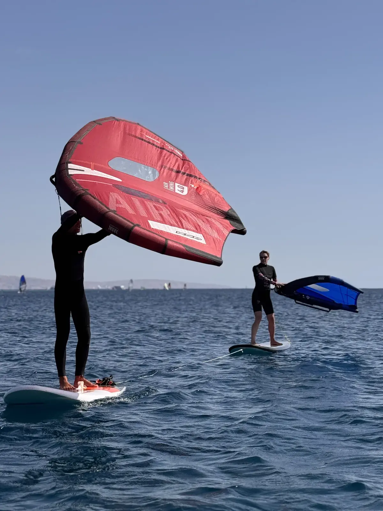
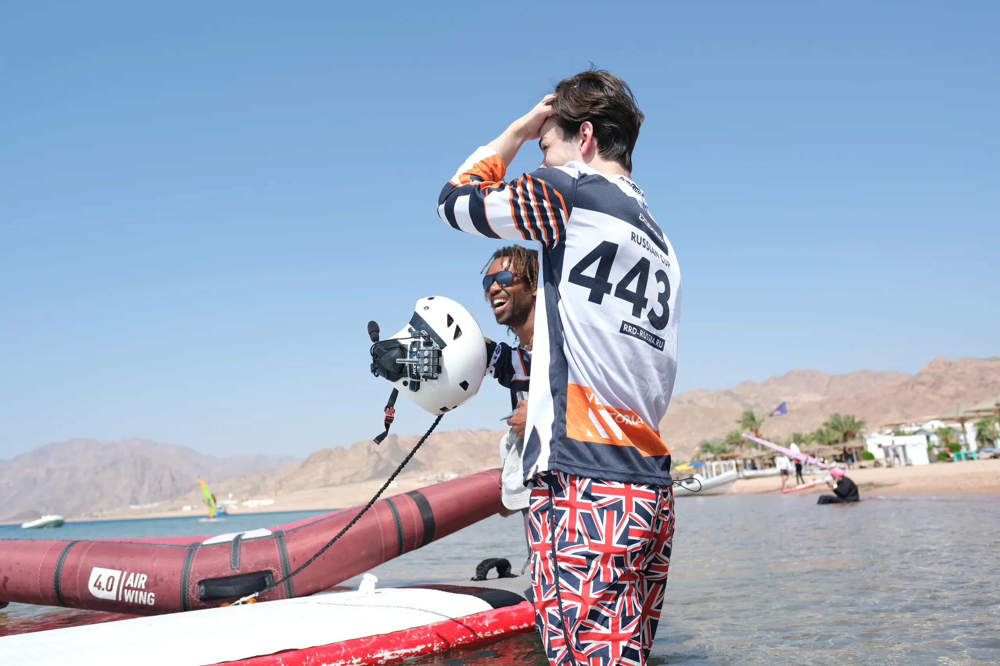
Продолжительность урока — 1 час
Первые 20–30 минут проходят на берегу. Инструктор объясняет основы: как правильно держать винг, под каким углом он должен находиться относительно ветра и как быстро вернуть его в рабочее положение, если угол потерян.
После этого начинается практика на воде. Инструктор сопровождает ученика на протяжении всего занятия, подсказывает и помогает скорректировать ошибки.
При необходимости ученика забирает спасательная лодка. Это обычная часть учебного процесса.
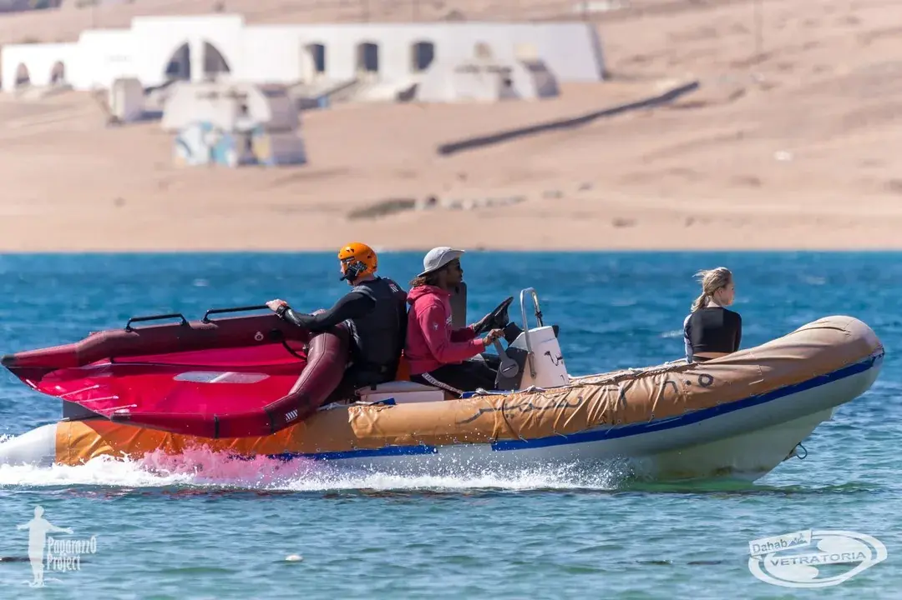
Частые вопросы
Для обучения мы используем устойчивые виндсерфовые доски со швертом размеров S, M и L.
Для некоторых детских занятий применяем специальную надувную доску объёмом 200 литров с тремя плавниками.
Занятия проходят в лагуне с прозрачной водой, где хорошо видно дно.
Спасательные лодки постоянно работают на акватории. Это часть организации обучения и системы безопасности.
Если у вас уже есть опыт виндсерфинга, как правило, достаточно 1 часа занятия с инструктором и 1 часа самостоятельной практики, чтобы освоить этот этап.
Этап 2
Доска с фойлом + лодка
Пожалуй, это самый эмоциональный урок во всём обучении.
Именно здесь ученики впервые ощущают невесомость и настоящий полёт над водой.
Если вы хотите понять, понравится ли вам вингфойл, этот этап — лучший способ познакомиться с ним.
На этом этапе мы полностью убираем винг и работаем только с фойлом. Всё внимание сосредоточено на ногах, балансе и ощущении полёта.
Для занятий мы используем широкую школьную доску объёмом 140 литров и большое учебное переднее крыло площадью 2400 см². Такое оборудование максимально стабильное и прощает ошибки. Большой фойл легко поднимает доску над водой уже на небольшой скорости и делает полёт плавным и предсказуемым.
Главная задача
Всё обучение сводится к очень простому принципу:
Дави назад — доска поднимается.
Дави вперёд — доска опускается.
Именно так ученик учится контролировать высоту полёта и равномерно распределять вес между передней и задней ногой.
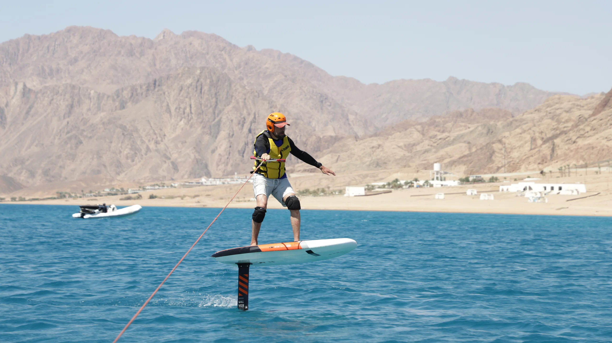
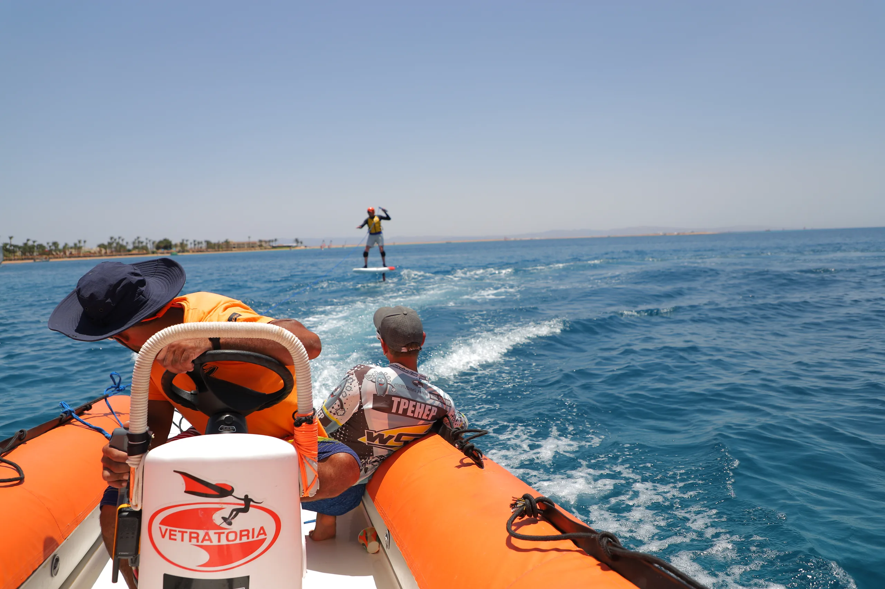
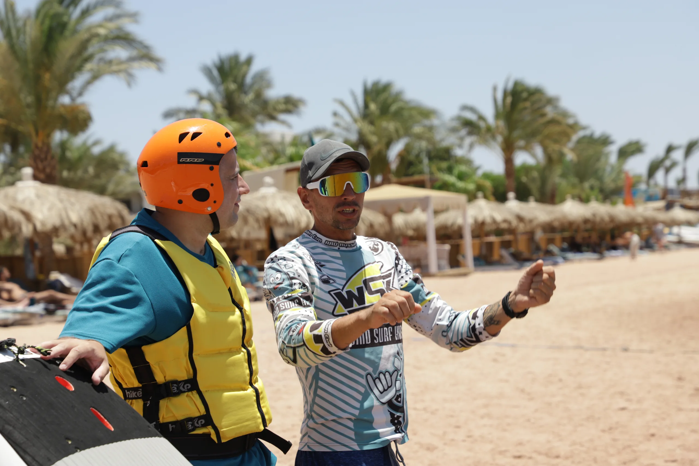
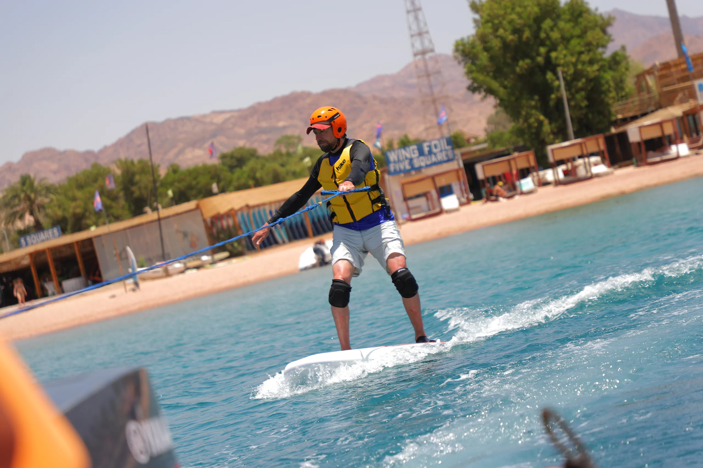
В большинстве случаев ученику достаточно 30–60 минут общего наката, чтобы понять принцип управления фойлом, почувствовать баланс и выполнить первые стабильные полёты над водой.
Почему не нужно бояться скорости
Во время урока катер движется медленно.
Доска поднимается на фойл не благодаря высокой скорости, а благодаря ровной тяге катера и большому учебному фойлу. Поэтому ощущения остаются спокойными и комфортными.
Самое важное
На этом этапе мы учим ноги работать автоматически.
Не нужно постоянно смотреть на доску или себе под ноги. Не нужно приседать и напрягаться.
Чем спокойнее и расслабленнее положение тела, тем легче контролировать фойл.
Почему это работает
Большая площадь учебного фойла даёт время спокойно перенести вес с задней ноги на переднюю.
Полёт получается плавным, без резких подъёмов и провалов. Именно эта плавность помогает почувствовать баланс и быстро обрести уверенность.
Результат
К концу второго этапа большинство учеников уже самостоятельно проходят небольшую дистанцию на фойле и впервые ощущают то, ради чего люди приходят в этот спорт — лёгкость, невесомость и настоящий полёт над водой
Вы научитесь управлять фойлом и контролировать высоту полёта, не глядя под ноги и не сгибая корпус вниз. Это ключевой навык для следующего этапа.
Когда в руках появится винг, взгляд должен быть направлен вперёд, а ноги — автоматически контролировать баланс и высоту полёта
Продолжительность этапа
Продолжительность одного занятия с инструктором — 30 минут.
Точное время зависит от индивидуального прогресса. Кто-то осваивает этап быстрее, кому-то требуется немного больше практики. Это абсолютно нормально.
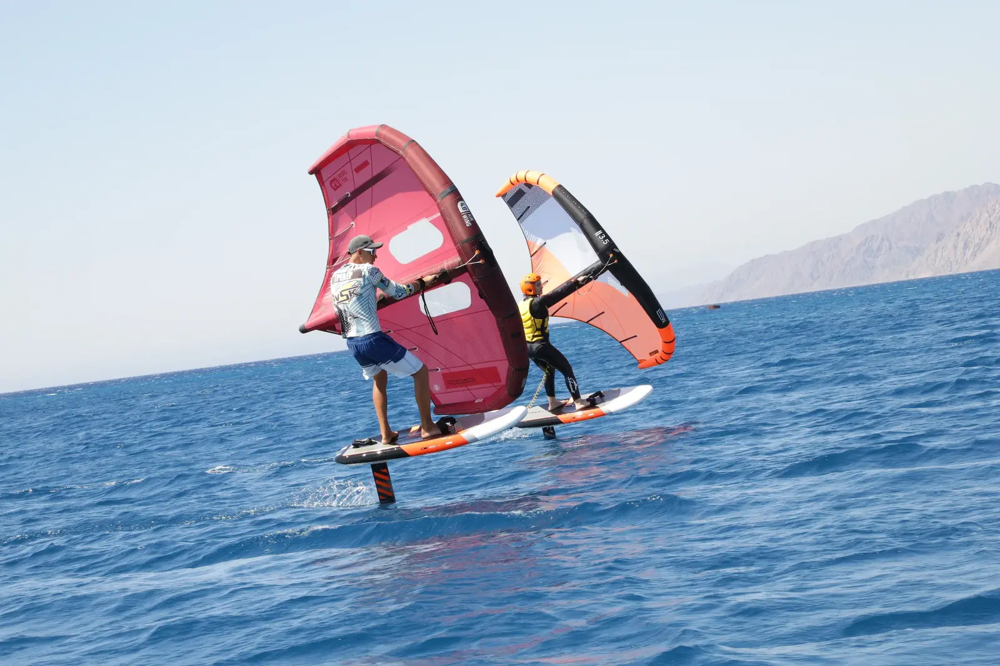
На этом этапе главное — лететь. Условно: куда тянет — туда и летим. Главное — стабильно.
Этап 3
Соединить винг + фойл
Катание «с горки»
На этом этапе мы соединяем два освоенных ранее навыка: управление вингом и контроль фойла.
Ученик начинает практику выше по ветру, в лагуне, и проходит дистанцию вниз и вверх по ветру — настолько, насколько получается. В самой нижней точке его забирает спасательная лодка и поднимает обратно в лагуну или возвращают обратно на станцию. Отсюда и название — «катание с горки».
Количество проездов ограничено только вашей усталостью. Спасательные лодки работают как шаттл на протяжении всего дня.
Начиная с этого этапа, можно продолжать занятия с инструктором или переходить к самостоятельной практике — в зависимости от прогресса.
Главная задача этапа
Самостоятельно выходить на фойл за счёт тяги винга и как можно дольше сохранять стабильный полёт — от коротких дистанций к более протяжённым.
Фокус
— стабильное положение винга и постоянная тяга;
— выход на фойл за счёт распределения веса между задней и передней ногой;
— расслабленность и плавность движений.
По одной задаче за раз: сначала — полёт, возвращение потом
На этом этапе главное — научиться лететь ровно, не переживать о потере курса и сосредоточиться на полёте.
Не расстраивайтесь, если не получается сразу вернуться на станцию. Это абсолютно нормально. Обучение последовательно:
— сначала — стабильно лететь ниже по ветру,
— затем — возвращаться против ветра.
Чем увереннее и стабильнее полёт, тем естественнее получается держать правильный курс. Постепенно возвращение на берег станет частью катания — без лишнего напряжения и постоянного контроля каждого движения.
Именно этот принцип делает обучение эффективным, а значит — быстрым и комфортным для любого ученика.
И главное — такой подход позволяет почувствовать прогресс уже сейчас: с каждой пройденной на фойле дистанцией.
Вингфойл — это возможность не просто учиться, а сразу получать удовольствие от катания. От первых небольших дистанций до более продолжительных полётов.
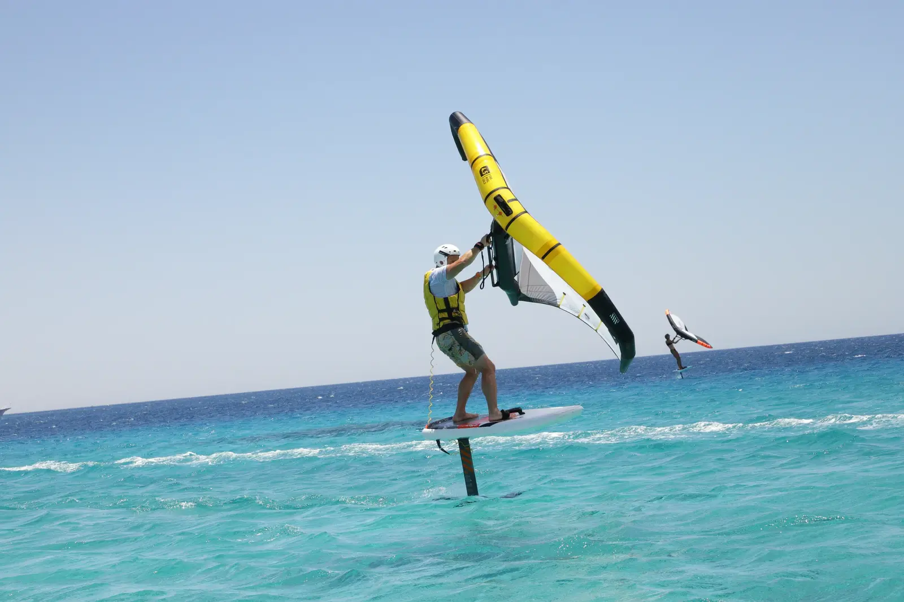
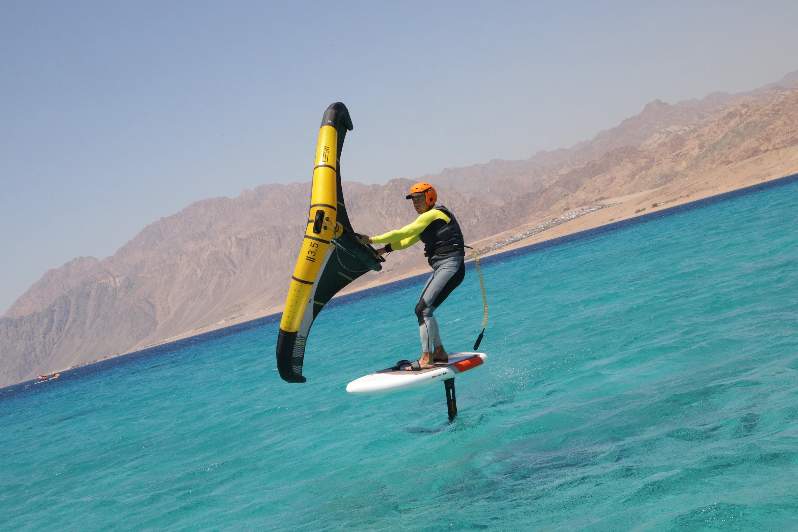
Формат обучения
Что входит в занятие
Инструктор, подобранное под ученика оборудование, защитный шлем, спасательный жилет и поддержка лодок на акватории. Первое занятие длится 1 час: короткая теория на берегу и практика на воде.
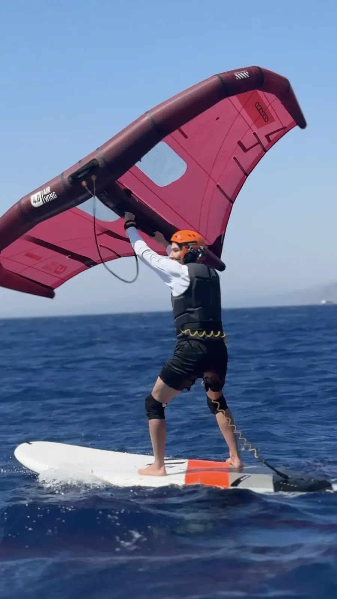
О снаряжении, которое помогает в обучении, а не мешает ему
В начале ученики используют самую большую доску — 140–150 литров. Она широкая и максимально устойчивая, что помогает спокойно адаптировать баланс.
Освоить баланс доступно каждому, независимо от физической подготовки. Для быстрого и комфортного обучения важно постепенно переходить от большего размера к меньшему — 140, 125, 120, 105 литров и далее.
Задача школы — не усложнять обучение, а создавать условия, в которых баланс быстро и комфортно адаптируется к каждому следующему этапу.
Большая доска — это уверенная платформа для первых этапов. Она не сильно поворотливая, но в начале это скорее преимущество: стабильность доски играет главную роль.
Чем меньше доска, тем она отзывчивее и маневреннее. Она точнее реагирует на действия ученика, и управлять ею становится легче. Проще распределять вес между ногами, задавливать доску и контролировать её положение во время выхода на фойл.
По мере уменьшения размера доски стойка ног также становится естественнее — примерно на ширине плеч. Движения становятся свободнее и точнее.
Лёгкое оборудование — лёгкое начало
Огромное преимущество вингфойла — лёгкое оборудование. Винг надувной, лёгкий, не соединён с доской и не имеет металлических элементов. Его легко поднять из воды и подтянуть к себе.
Это кажется мелочью, но именно это помогает прогрессировать.
Когда вы понимаете, что после падения легко вернуться на доску, вы меньше боитесь ошибиться. Можно попробовать сделать ещё одно движение, увеличить скорость, зарезать на ветер острее, подняться выше или сделать первый поворот.
Падение перестаёт быть препятствием. Вы просто поднимаетесь и пробуете снова.
После падения легко вернуться на доску, поэтому ученик меньше боится ошибок и быстрее прогрессирует.
Легко подняться, легко начать заново. А значит — смелее пробовать и не бояться ошибок.
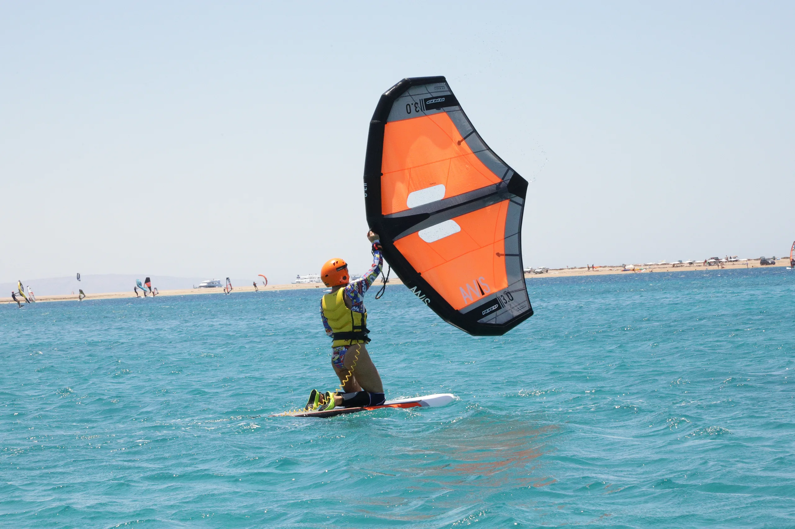
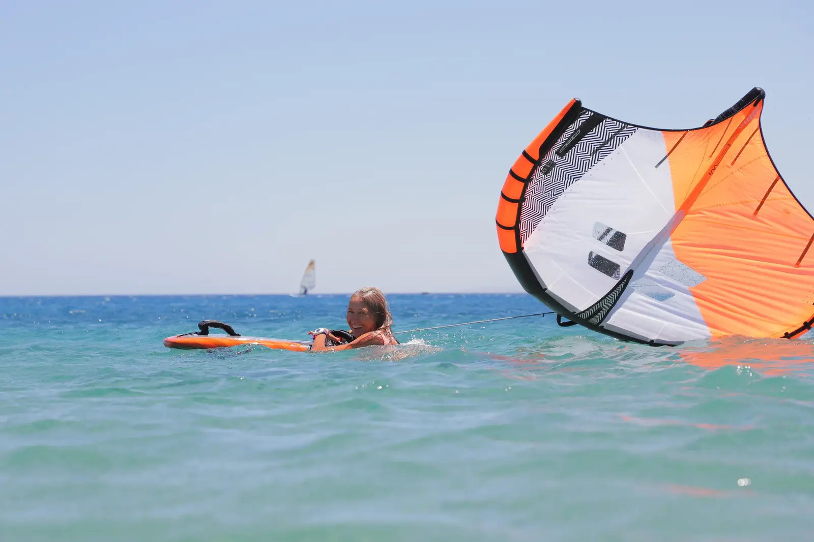
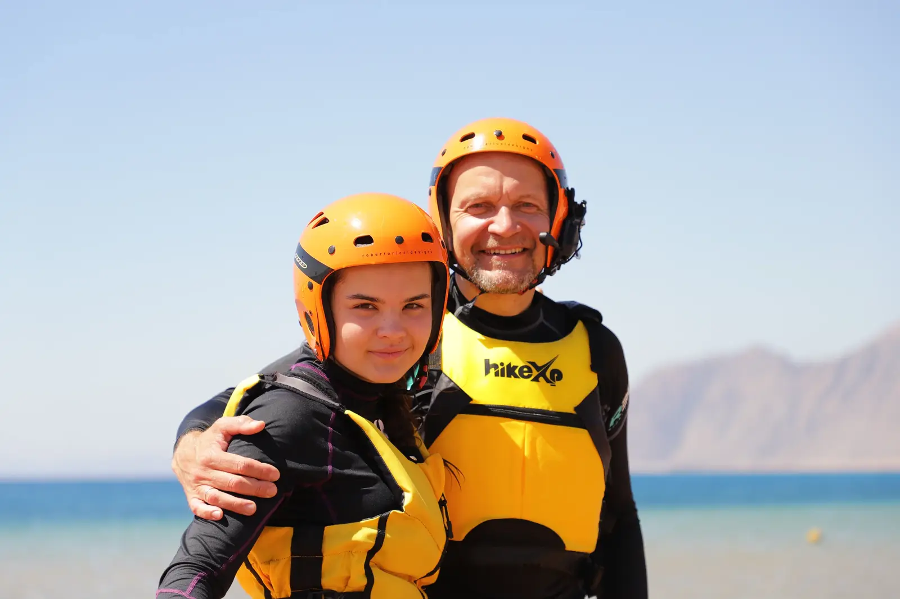
И просто на заметку…
Голубая, чистая и прозрачная вода. Большая часть лагуны и «трассы» обучения проходит там, где хорошо видно дно. Здесь комфортно даже тем, кто побаивается тёмной воды.
Фойлы не острые. Учебные фойлы имеют большой размер и достаточно толстый профиль, поэтому их края затуплены. Острые фойлы — это уже продвинутое снаряжение для рейса, волн и фрирайда.
Падать в воду не страшно и не больно. Все когда-нибудь прыгали «бомбочкой» в бассейн — здесь примерно то же самое. Правильную и очень простую технику падения инструктор объяснит ещё до выхода на воду.
Шлем и жилет. Для обучения школа выдаёт защитный шлем и спасательный жилет.
Спасение катером. Если вы оказались дальше, чем нужно, — это нормально. Лодка приедет и заберёт вас. А пока она едет, можно спокойно сидеть на доске и наслаждаться видом.
Наша школа находится с правой стороны отеля SWISS INN.
Выходите к морю — мы справа, ждём вас.
Ответы инструкторов
Частые вопросы об обучении вингфойлу
Можно ли прийти без опыта?
Да. Большинство учеников начинают с нуля. Сначала вы отдельно осваиваете управление вингом на устойчивой доске, затем — баланс на фойле за лодкой.
За сколько дней я начну лететь?
Первые короткие полёты обычно появляются на 3–5-й день, а самостоятельная практика — примерно на 5–7-й. Это ориентир, а не обещание: темп зависит от ветра, регулярности занятий и особенностей ученика.
Нужна ли хорошая физическая форма?
Специальная подготовка не требуется. Правильная техника основана на балансе и расслабленных движениях, а не на силе рук.
Что входит в безопасность?
Для занятий выдаются шлем и спасательный жилет. Используется устойчивое учебное оборудование, а спасательные лодки сопровождают обучение на акватории.
Почему сначала SUP, а потом фойл за лодкой?
Так руки и ноги осваивают свои задачи отдельно. На SUP вы учитесь управлять тягой и курсом, а за лодкой — контролировать высоту полёта ногами. После этого навыки легче соединить.
Где находится школа?
Станция Ветратория расположена на берегу справа от отеля Swiss Inn Resort Dahab.
Хотите понять, какой формат подойдёт именно вам?
Напишите инструктору — ответим по срокам и подберём обучение
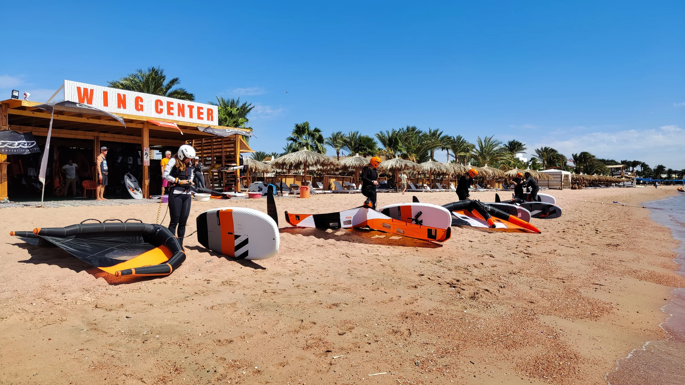
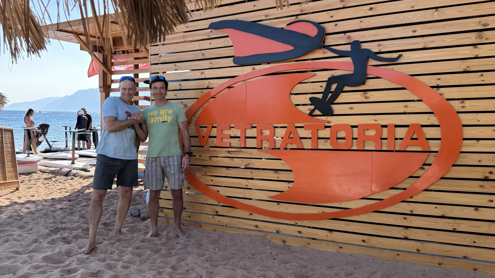
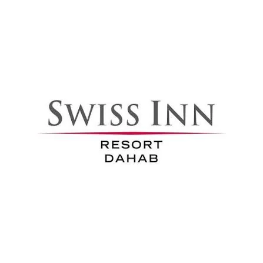
Наша школа находится с правой стороны отеля SWISS INN.
Выходите к морю — мы справа, ждём вас.
Ветратория — школа вингфойла. Мы рядом
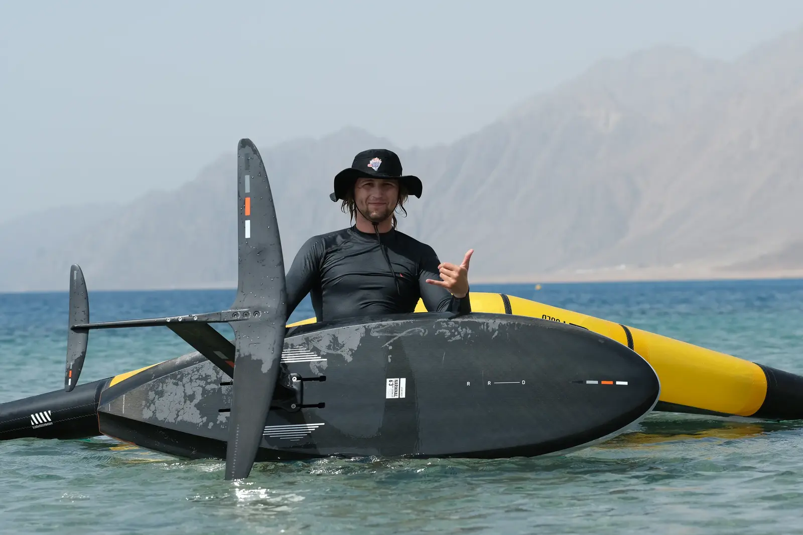